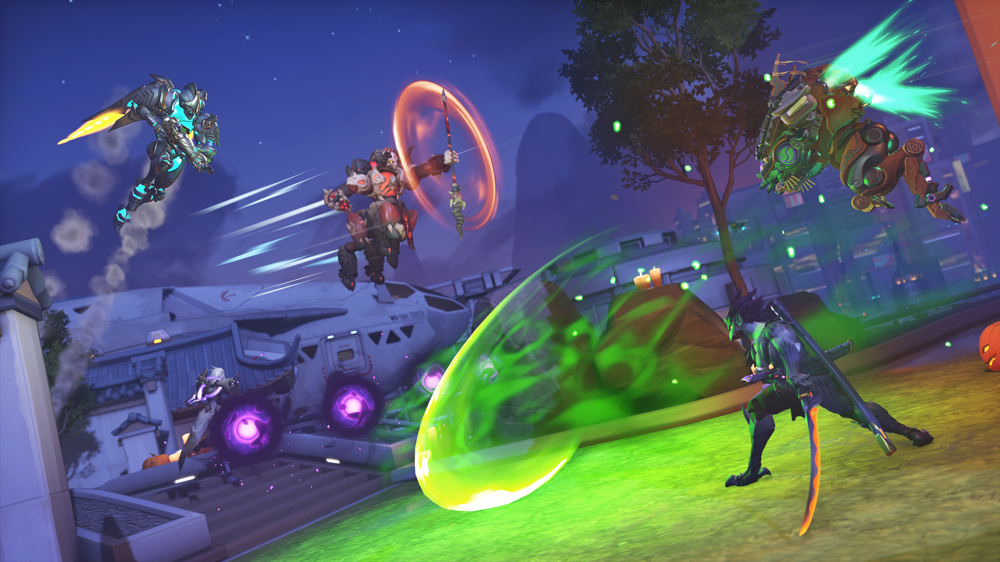

História
A história e o universo de Overwatch
A história de Overwatch se passa em um futuro fictício no qual a humanidade desenvolveu robôs inteligentes conhecidos como ômnicos. Após um conflito entre humanos e máquinas, uma organização internacional chamada Overwatch foi criada para combater a crise e restaurar a paz.
Com o passar do tempo, a organização se tornou alvo de controvérsias e acabou sendo dissolvida. Anos depois, diante de novas ameaças, antigos integrantes e novos heróis voltam a se reunir. Esse universo é apresentado por meio de animações, histórias em quadrinhos, contos e acontecimentos dentro do próprio jogo.
Os heróis e suas funções
Uma das características mais marcantes de Overwatch é a diversidade de heróis. Cada personagem possui armas, habilidades e características que influenciam diretamente a maneira de jogar. Escolher um herói adequado e combinar suas habilidades com as dos companheiros pode fazer a diferença entre a vitória e a derrota.
As principais funções dos personagens
- Tanque: personagens que ficam na linha de frente, absorvem pressão dos adversários e ajudam a proteger a equipe. Um exemplo é Reinhardt.
- Dano: heróis especializados em causar dano e eliminar os adversários. Tracer é um exemplo de personagem dessa função.
- Suporte: personagens que ajudam a equipe com cura, melhorias e outras habilidades de apoio. Mercy é uma das representantes mais conhecidas dessa função.
Como funciona uma partida?
As partidas de Overwatch apresentam objetivos variados, dependendo do modo de jogo. Em algumas partidas, uma equipe precisa escoltar uma carga até o destino, enquanto a outra tenta impedir seu avanço. Em outros modos, os jogadores devem conquistar e defender determinadas áreas do mapa. Por isso, derrotar adversários não é o único objetivo: a equipe precisa trabalhar em conjunto para cumprir as missões.
Cinco dicas para melhorar no jogo
- Conheça os heróis: experimente personagens diferentes para entender suas habilidades e limitações.
- Aprenda os mapas: observe rotas alternativas, pontos estratégicos e locais que oferecem vantagens.
- Trabalhe em equipe: ajude seus companheiros e combine habilidades para alcançar os objetivos.
- Use as habilidades no momento certo: escolha o momento adequado para aproveitar os recursos de cada personagem.
- Adapte sua estratégia: considere trocar de herói quando a composição da equipe não estiver funcionando bem.
Curiosidades sobre Overwatch
Além de sua jogabilidade competitiva, Overwatch possui um universo fictício desenvolvido por meio de histórias, animações e personagens com diferentes origens. Esses elementos ajudam a criar uma identidade própria para o jogo e aproximam os jogadores de seus heróis favoritos.
- O primeiro Overwatch foi lançado em 2016.
- O jogo foi desenvolvido pela Blizzard Entertainment.
- Os heróis possuem habilidades especiais chamadas habilidades supremas.
- Os mapas apresentam ambientes inspirados em diferentes regiões do mundo.
- O jogo ficou conhecido pela importância da cooperação entre os jogadores e pela cena competitiva.
Porque o Overwatch é diferente?
Overwatch se diferencia de muitos jogos de tiro por dar grande importância às habilidades dos personagens e ao trabalho em equipe. A precisão com as armas é importante, mas conhecer os heróis, compreender os objetivos e colaborar com os companheiros também são fatores essenciais. Cada partida apresenta situações diferentes, exigindo decisões rápidas e estratégias adaptadas aos adversários.
